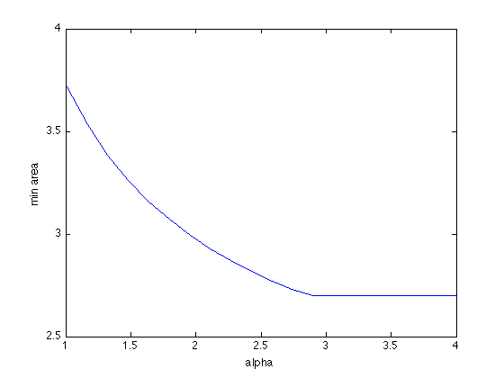

Floor planning with an optimal trade-off curve.
% Boyd, Kim, Vandenberghe, and Hassibi, "A Tutorial on Geometric Programming" % Written for CVX by Almir Mutapcic 02/08/06 % (a figure is generated) % % Solves the problem of configuring and placing rectangles such % that they do not overlap and that they minimize the area of the % bounding box. This code solves the specific instances given % in the GP tutorial. We have four rectangles with variable % width w_i and height h_i. They need to satisfy area and aspect % ration constraints. The GP is formulated as: % % minimize max(wa + wb, wc + wd)*(max(ha,hb) + max(hc,hd)) % s.t. wa*ha == area_a, wb*hb == area_b, ... % 1/alpha_max <= ha/wa <= alpha_max, ... % % where variables are rectangle widths w's and heights h's. % constants a = 0.2; b = 0.5; c = 1.5; d = 0.5; % alpha is the changing parameter N = 20; alpha = linspace(1.01,4,N); fprintf(1,'Solving for the optimal tradeoff curve...\n'); min_area = []; for n = 1:N % GP variables cvx_begin gp quiet variables wa wb wc wd ha hb hc hd % objective function is the area of the bounding box minimize( max(wa + wb, wc + wd)*(max(ha,hb) + max(hc,hd)) ) subject to % constraints (now impose the non-changing constraints) ha*wa == a; hb*wb == b; hc*wc == c; hd*wd == d; 1/alpha(n) <= ha/wa; ha/wa <= alpha(n); 1/alpha(n) <= hb/wb; hb/wb <= alpha(n); 1/alpha(n) <= hc/wc; hc/wc <= alpha(n); 1/alpha(n) <= hd/wd; hd/wd <= alpha(n); cvx_end min_area(n,1) = cvx_optval; end figure, clf plot(alpha,min_area); xlabel('alpha'); ylabel('min area'); axis([1 4 2.5 4]); disp('Optimal tradeoff curve is plotted.')
Solving for the optimal tradeoff curve... Optimal tradeoff curve is plotted.